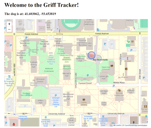

I'm a Drake University senior expected to graduate in May. I'm double majoring in Data Analytics and Computer Science, and have taken many courses on Statistics and different Computer Science specialties like Machine Learning and Software Engineering. My mission in life is to become the ebst version of myself through my work and my actions. I'm excited to join the workforce and apply my skills and knowledge to my field!
Using R, I completed an analysis of the redlining dataset from FiveThirtyEight to see if redlining can be combatted for my STAT 172 course. The goal was to generate solutions for a potential client - mine being the Department of Justice's Combatting Redlining Initiative.
Using R, my group is scraping and cleaning power outage and weather data to look at and analyze the relationship between weather events and power outages, and quantify risk.
Using Python and Git, my group created a website that displayed the location of a Tile Mate tracker. We modeled it as if we were tracking our live mascot, Griff II.
